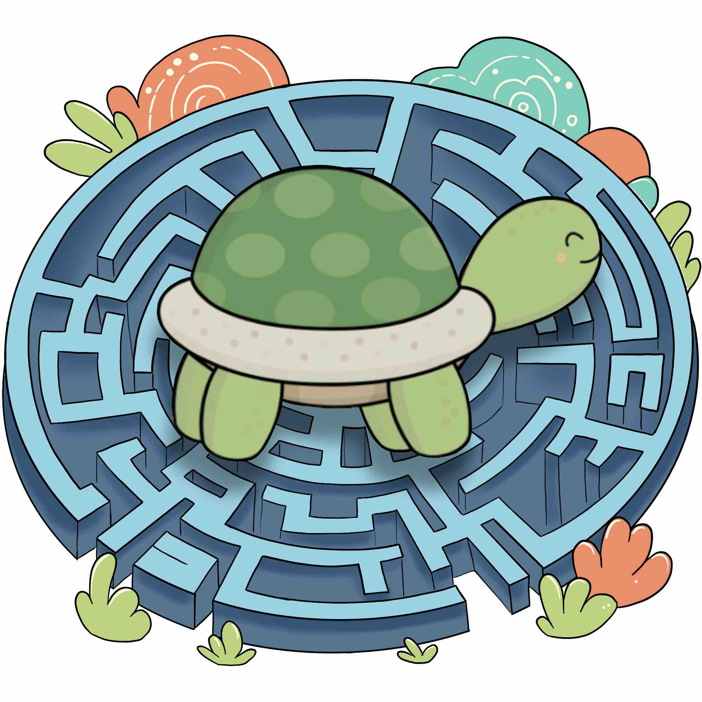
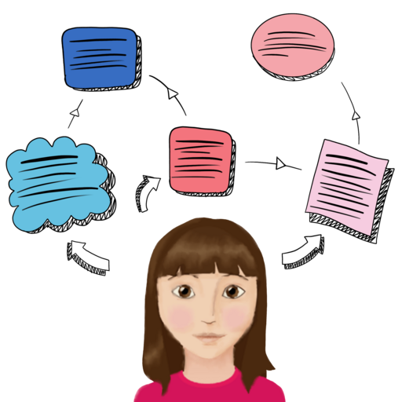
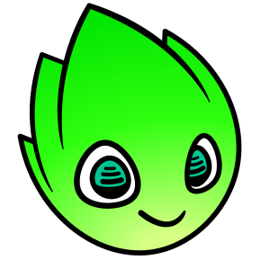
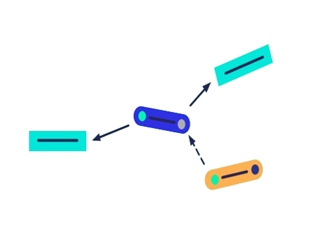
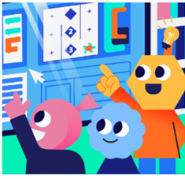

Try out some example learning activities available on PILA targeting various competencies, such as computational thinking, self-regulated learning, and systems thinking.

Use block-based coding to guide a robotic turtle through tasks in a grid-like world.

Teach a virtual agent, Betty, about complex phenomena by using causal mapping tools.

Program and design your own digital game, then check for and correct errors in the game's program or interface.
Monitor your students' progress in real time on interactive dashboards. View an example here.
Explore how a class is progressing on the expert map, how individual students' maps differ, and which links are particularly difficult for students.
Design your own activities using the library of simple and intuitive PILA customiser tools. Try a few out now.
Design your own unit by creating an "expert" causal map of a phenomenon and the corresponding resource book with text, images, and videos!

Create your own computational thinking challenges by adjusting the grid-like world, available blocks to instruct the robotic turtle, and add instructions/hints.
